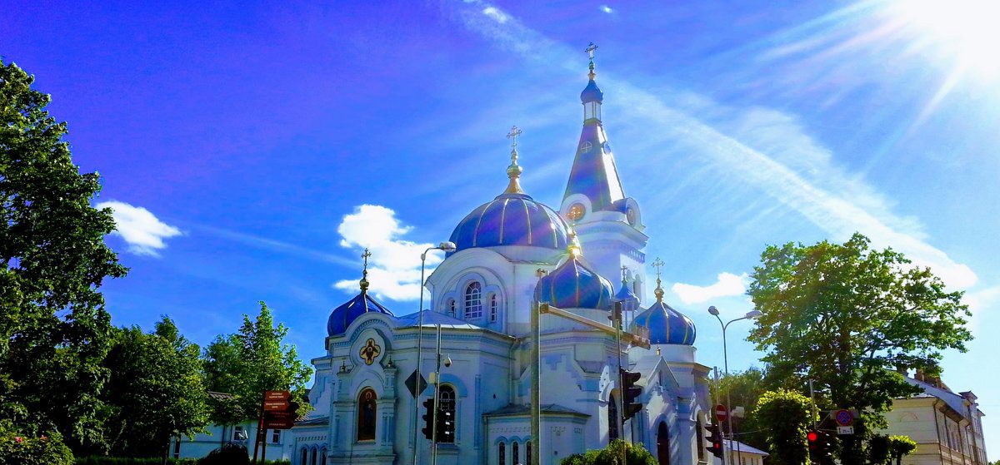

The history of the cathedral dates back nearly three hundred years. In 1726 by the order of the Duchess of Kurland Anna I, future Russian empress, a small wooden Orthodox church was built in Mitava (Jelgava’s former historical name). The
church was consecrated in honour of St. Simeon the God-receiver and St. Anna the Prophetess (the latter was the patron saint of Anna the First). Those two saints went down to history as the first Jews to meet baby Jesus in the Temple
in Jerusalem and recognise Him as the promised Messiah.
In 1774 -1780 by the order of the Russian empress Catherine II, the old church was redesigned in baroque style according to the design of the empresses architect Francesco Bartholomew Rastrelli.
The church received its current look in 1892. Due to the rapid growth of Jelgava’s Orthodox population, Russian architect Nicolai Chagin was commissioned to extend significantly and redesign the cathedral into Russian-Byzantine style.
The Russian emperor Alexander III supported the construction works from his personal funds.
The cathedral suffered heavily during the World War II. After the war, during the Soviet time the cathedral became the state property, but it was not restored, and its rooms were used as a storage of chemicals.
When Latvia regained its independence, the church was returned to its Orthodox congregation. In 1993 the Latvian Archbishop Alexander launched great reconstruction works. Soon in the early 2000s this church finally returned to life, and
the believers regained the opportunity to gather and pray together in their church. The divine services and the Sacraments were recommenced, the parish life was established, and a Sunday school for children, adolescents and adults
was opened. There are nine bells in the bell-tower; the biggest bell weighs 830 kg.
Since 2016 the dean bishop of this cathedral has been John of Jelgava, the vicar of His Eminence metropolitan Alexander.
In 2018 with the financial support of the Jelgava City council and the European Union, the parish started to restore historical wall paintings and sacred icons lost or severely damaged during the World War II and the Soviet times.